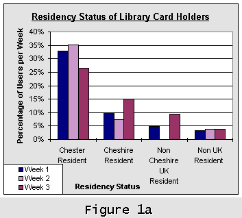
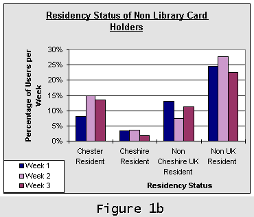
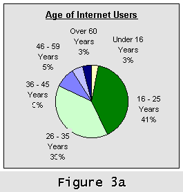
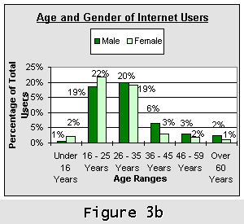

Information Research, Vol. 5 No. 3, April 2000


Information Research, Vol. 5 No. 3, April 2000 | ||||
|
|
|||
Katherine Turner |
and |
Margaret Kendall |
Chester Library, Northgate Street, | Dept. of Information and Communications, |
Substantial investment is accelerating the provision of public access to the Internet in UK public libraries. Monitoring and evaluation will be essential to inform policies, developments and justify the new services. This paper reports on quantitative and qualitative research into the use being made of the Internet facilities at Chester Library between August 1998 and May 1999. A questionnaire survey of 178 users revealed substantial use by non-library members, mostly aged between 16 and 35, with only slightly higher use by men than by women. Most of the sample had received no formal training in Internet use and the most popular application was e-mail. Follow-up interviews with 9 users provide examples of the value of the service to users and recommendations for increased training and support from librarians. Analysis of the results includes recommendations for Chester libraries and contributes to the wider debate on the changing roles of public libraries. Further research on the monitoring and evaluation of IT-based services in public libraries is now underway at Manchester Metropolitan University, with Cheshire libraries being one of three library authority project partners in VITAL, an 18 month study funded by the Library and Information Commission.
UK public libraries are at present experiencing unaccustomed limelight, but like a Broadway show in which there has been substantial investment, success will depend on the appreciation of the performance by the audience and the critics. As recognised by the Library and Information Commission (1997, 7.1), the views of users on the services provided in public libraries through the UK "people's network" will be of paramount importance to inform future developments. Provision of Internet access points will accelerate rapidly from March 2000, with the release of the New Opportunities Fund money from the Government to implement the plans for content, training and infrastructure (Library and Information Commission, 1998). Without detailed information about Internet users and the values they place on the services they receive, public librarians will lack the evidence and authoritative arguments which will be essential when policymakers and others inevitably start to question the resources needed to sustain the initiative.
Prior to the current unprecedented national investment, a number of public library networking projects took place during the 1990s, funded by innovatory local government authorities, the European Commission Libraries Programme and the British Library Research and Development Department (Ormes, 1997). Evaluation of some of these, notably the Croydon Libraries Internet Project (Kirby, 1997), Croydon Online (Eve, 1998) and the Solihull IT Point (Kayam and Turner, 1997), provides some positive results about users' experiences, including enthusiasm for the information found using the Internet. It is too early yet for there to have been UK surveys on the scale of those carried out in Pennsylvania, US by McClure and Bertot (1997), which encouragingly found substantial (26%) use of library Internet facilities by people who had not previously visited the library.
Batt (1997) found that 87 (46%) of UK library authorities but only 5% of library service points provided public access to the Internet. Since then, there has been rapid growth in provision, supported in many cases by funding from DCMS/Wolfson Public Libraries Challenge Fund. As each library authority is autonomous, there are variations in both policies for access and the facilities available. For example, a telephone survey of 94 library authorities carried out in summer 1998 by EARL: the consortium for library networking (1998) revealed that 32.3% provided e-mail services whereas 67.7% did not.
The research discussed in this paper was carried out between August 1998 and May 1999, with the aim of identifying the use being made of recently established Internet facilities at Chester Library, UK. The policy at this library is to charge a half-hourly rate for access and allow use of a full range of Internet facilities on a self-service basis, subject to agreement not to access obscene material.
Chester is the county town of Cheshire in the North-West of England and is a popular destination for tourists. Cheshire Libraries and Archives, a service provided by Cheshire County Council's Community Development Department, divide the county into three areas for administrative purposes and Chester is one of the main libraries in West Division, which consists of Ellesmere Port, Neston and Chester districts.
In 1997 Cheshire Libraries and Archives secured &#pound;126,792 from the DCMS/Wolfson Public Libraries Challenge Fund, with matching funding from the County Council, partnerships and contributions in kind. Six libraries throughout Cheshire (Macclesfield, Crewe, Congleton, Northwich, Ellesmere Port and Chester) were equipped with IT resources comprising Internet access, CD-ROMS and word-processing facilities.
Chester's situation was somewhat different from the other five libraries. A separate partnership consisting of the library, West Cheshire College, Chester, Ellesmere Port and Wirral Training and Education Council (CEWTEC) had already been successful in securing funding from the DfEE Flexible Training Strategies. The Chester IT facility was much larger than elsewhere with a broader remit. Known as the Open Learning Centre (OLC), the centre aimed to be a location where users could learn informally about using computers, undertake certified courses of study, use the Internet and have access to office software.
Cheshire Libraries do not use filtering software and permit Internet users to access web-based e-mail and chat rooms without restrictions. Every member of the public wishing to use computers in Cheshire Libraries is asked to complete an Acceptable Use Policy (AUP) declaration, which sets out the rules and regulations relating to public access to IT. The specific conditions related to Internet use are:
At the time the research was carried out, the Conditions of Internet access to those users aged under sixteen years old were identical to those for adult users. Subsequently, the policy was amended so that under-16s now require written endorsement from a parent or guardian before they are permitted to use the Internet. Users may download and upload software, web pages and other material providing this is done via floppy disc and does not involve the use of the hard drive of library computers. The use of personal floppy discs is on the understanding that these will be virus-checked before use. If a virus is located the library may clean the disc if the user wishes, although the owner must be made aware that this may alter files on the infected disc.
Chester's Open Learning Centre operates a booking system for use of the computers, although users may also drop-in. During the research period the number of computers available for public use grew from seven to eleven. Internet Access was initially available on three machines, rising to five by 1999. Machines may be booked by the half hour or by the hour, or longer, subject to availability. The charges are &#poound;2.50 per half hour for Internet access, &#poound;1.25 for Leisure card holders and those under 16 years. [A Leisure card is a discount library card for those in receipt of various means tested benefits eg. job seekers allowance, income support etc.] Longer or shorter periods are charged on a pro-rata basis. Printing costs 10p per sheet black and white or 25p colour. Leisure card holders, those under 16 years and those who bring their own paper are charged 5p and 15p respectively.
The aim of the research was to identify the use being made of Internet facilities by the public at Chester Library. To fulfil this aim, the specific objectives were:
The methods used in the research were:
A structured questionnaire (Appendix 1) was used to collect quantitative data about Internet users and their use of the facilities. As Chester is a popular tourist destination, it was thought essential to examine the possible influence of visitors and of seasonal variation on Internet use. Therefore, the questionnaires were handed out to Internet users during three weeks in August, October and December of 1998. A high response rate of 178 (86%) was achieved, which may be attributed to the fact that staff handed a copy of the questionnaire personally to almost every Internet user, and encouraged completion and return. The sample represents 73% of those using the Internet during the three week survey period, a total of 245 people.
Interviews were then held with nine users who had indicated their willingness to be interviewed in the questionnaire. The interviewees were selected to reflect the variety of the sample of Internet users at Chester Library (See Appendix 2).
The questionnaire results were analysed to acquire an overview of the importance of different issues to Internet users. On the basis of the results, a semi-structured interview schedule was designed to enable ease of comparison between interviewees on particular topics, whilst also allowing individuals to express their own thoughts and ideas about their use of the Internet in the library in a less structured manner. The interviews were conducted in April and May 1999.
The quantitative results indicate considerable use by non-library members (52%) and casual visitors from outside the UK (25%). The majority of the sample were employed (47%), although despite the charges the percentage of unemployed users (22%) was relatively high. The overwhelming majority were aged between 16 and 35 (80%) and only slightly higher use was made by men (51%) than women (49%). The most popular use was of web-based e-mail (55%), although many also searched for specific information (36%) or consulted specific websites (27%). The majority (75%) had not received any formal training in Internet use.
The qualitative results provide examples of the value to the users of the types of information retrieved and the Internet facilities available. They indicate strong support for Internet provision in public libraries, with reasons given including the friendly, work-like atmosphere, the presence of trained staff able to offer help and advice, and the relationship between networked information and more traditional formats provided by the library. More active promotion and publicity for the service, more training and support from library staff, and reduced charges were amongst the recommendations.
The results suggest that Internet access is bringing in a considerable proportion of non-library members, although these may not necessarily be non-users of the library since use of the library for reference purposes is not restricted to members. Cheshire library cardholders made up 48% of the Internet user sample, of whom 11% were Leisurecard holders. Thus there was a very slim majority (52%) of non library card holders using the Internet. These percentages were very consistent for each week, suggesting that the user profile as regards library membership had some constancy during the period in which the survey was undertaken.
The residency profile was compared with the library membership profile to try to discover whether the non-members were overseas visitors or local residents. Cheshire residents made up 57% of Internet users, of whom 43% were Chester residents. Therefore 43% of users were non Cheshire residents, the majority of these, 29%, were non UK residents, whilst the remainder, 14%, were UK residents living outside Cheshire.
|  |  |
Figure 1a shows the residency status of library card holders. A small minority of library card holders lived outside Cheshire or did not consider themselves to be UK residents, 25% of library card holders, 8% of total users. As these users had a library card it is clear that not all non UK residents are casual visitors to Chester.
Figure 1b shows that half the non library card holders lived in the UK (51% of non card holders, 26% of total users). Therefore 49% of non card holders were non UK residents, 25% of the total sample.
It is interesting to note that although the majority of users were UK residents and predominantly from Cheshire, a quarter of the total Internet users appeared to be casual visitors from overseas. Due to the lack of comparative figures of this nature for other areas within the UK it is difficult to judge whether this was a significantly high or low percentage.
Figure 1b also shows that over a quarter of users who did not have a library card were from Cheshire. These are local people who do not borrow items from the library, but do benefit from using the Internet services. It is impossible to know whether they had previously used the library for other purposes which do not require a membership card. Nevertheless, it is clear that the provision of Internet Access had encouraged non borrowers to make a more quantifiable use of library services.
Figure 2 shows that the breakdown of users by employment status was similar for all three weeks. For each week the most numerous group were full time employed users, who made up 38% of the total sample. The percentage of users in this group barely varied over the survey period.
The next most consistently large grouping were unemployed people. This group accounted for 22% of the total sample. These figures show a slight but distinct seasonal variation, decreasing steadily from a high of 26% in August to a low of 19% in December. There could be many reasons for this variation. Users may have found work, or they may have chosen to spend their income on other items rather than Internet access in the run-up to Christmas.
Student users made up 20% of the total sample, slightly fewer than the percentage of unemployed users. The remaining groups constituted 20% of the total sample, including 9% part-time workers and 5% retired users.
It was anticipated that employed users would be the largest group, due to the charging policy. However, the percentage of unemployed users was relatively high (22%) despite the charges. The Leisure card holder statistics showed that only half the unemployed users were paying the lower rate.
|  |  |
Figure 3a shows very clearly that the vast majority of Internet users in the sample were aged between 16 and 35 years old. These two groups accounted for 80% of the entire sample over the three weeks. Of the remainder 17%were over 36 years, with only 3% under 16 years.
Research into Internet use has frequently shown that young men are often the main users (GVU, 1999). Comparisons were made between the age and gender statistics in this survey. Figure 3b shows very clearly there was almost no variation between the proportion of male and female users in each age group. The balance between the sexes was very even, so small as to be insignificant. Figure 3b seems to suggest that there was a slightly higher proportion of older men using the service than women, but this is very slight. Over the entire study period the proportion of male and female users was remarkably similar. The overall average of total users split almost exactly in half with 51% male and 49% female.
Comparison of the breakdown of library card holders/non-holders with gender revealed that that 51% of the women users had library cards, whilst 48% of the male Internet users had library cards. The percentage difference is so slight as to be insignificant. The only area where there was some difference between the sexes was Leisurecard users. 15% of male users had Leisurecards as opposed to only 7% of female users.
The results suggest that those using Chester's Internet facilities were primarily interested in e-mail services. They were also concerned to find information about specific subjects or to look at specific web sites. The majority were unlikely to use the Internet purely for recreation or to spend time browsing aimlessly, most people using the service had a particular purpose in mind.
The users were given the opportunity to choose from a wide selection of reasons for using the Internet. Web-based e-mail proved to be the most popular facility used. [This is a form of e-mail which does not require specific software and can be directly accessed via the WWW from anywhere in the world.] As figure 4 shows, over 55% of users per week and up to 70% of week three users stated that they used this form of e-mail. This was a facility which became more popular as the study progressed. 39% of total users stated that web-based e-mail was their sole reason for using the Internet in Chester Library.
The next most popular use was searching for information on a specific subject. 36% of total users stated that this was one of their main reasons for using the Internet. Percentages for this type of use remained constant and did not appear to be affected by seasonal variation.
Using the Internet to visit a specific web address was the only other facility to achieve more than 20% usage rates. 27% of total users said that visiting a specific website was their main purpose in using the Internet. This purpose was affected by seasonal variation as the percentage of users giving this as a reason decreased by half in December, dropping to 14%. There are no apparent reasons for this sudden change.
42% of users throughout the period used multiple services or had several reasons for using the Internet at Chester Library on the day they completed their questionnaires. However, this means that the majority of users, 58%, had only used the Internet for one purpose. The reasons for limiting use to one purpose could be time and cost, but it may also indicate a lack of awareness of web sites which could be relevant to them or a lack of skills needed for searching.
Figure 5 shows very clearly that very few of the sample using the Internet at Chester had had any form of Internet training. 75% of the users had never had any training in Internet use at all. This leaves a quarter of users who had experienced some form of training. On closer enquiry, 27% of this quarter had received training in the library, either from staff or by using the training packs available. Other popular sources of training were through education (24%) and through self-training (24%). A small percentage had received training at work (11%), whilst the same number had obtained advice from friends or family.
Following analysis of the questionnaire survey, a sample of nine people was selected for interview to reflect the variety of users of the library Internet resources. These included men and women of different ages, employment, residency and library membership status (see Appendix 2 for details). Their responses are organised on a thematic basis, with some views presented verbatim to give a flavour of their thoughts and ideas.
Publicity for the Open Learning Centre had been generally low key, so information about how interviewees had heard of the facility was gathered to inform future activities. Publicity within the library had attracted three users, three others had heard by word of mouth, one had seen publicity in a local paper and one had seen a poster at County Hall. User F had assumed that provision would be available:
- "It's common knowledge that libraries have these sort of facilities and I expected Chester library to be no different."
- User E, in contrast, identified the need for a more proactive role for the library:
"I think there's a lack of awareness about the library's Internet facilities. A lot of 'anti-technology' people just aren't interested and never will be unless someone does some sort of campaign to raise awareness, the profile of the service."
The majority of interviewees (eight) originally decided to use the Internet at Chester Library since they were aware of no other services available to them. The other user (B) preferred to use the library rather than her college facilities, since she felt the library set-up was easier to use and more reliable. User A also had access at a friend's house, but her comment illustrates the importance of access in a public place for privacy and a sense of personal responsibility:
"I prefer to have a machine to myself so I don't have to share. Also I prefer to pay since then I don't feel guilty about using my friend's phone bill. I have control over my time and can choose to pay for more if I want to."
Six users had continued to use the facilities at the time of interview (May 1999), whilst three had not. By then, two had access at home, which they preferred for privacy, convenience and cost savings. The other had moved away from the area. All the continuing users stated that the library was the closest, most convenient point of access, whilst four had no other point of access. Four of the interviewees considered themselves to be regular users, visiting the facility once a week.
All nine interviewees thought the public library to be an appropriate place for access to the Internet. As they had all accessed the Internet at the library, such a response is unsurprising, but it does imply satisfaction with the service received. Those no longer using the library for access to the Internet said that they would use it again if the need arose.
Two main reasons were given for considering public libraries to be an appropriate location, the first being the role of the library service as an information provider. Secondly, the library was seen as a public place where all are welcome.
User H stated, "The Internet is a wonderful source of information. People probably come to a library to look for information, providing access to the Internet is a natural extension of this."
User C said, "The library gives access to the public at large. Everyone can use a public library. There is growing access at home, but not everyone has this, people will be 'excluded' (that's the current government buzzword isn't it?) if the library doesn't offer the service."
Three users commented on the importance of the atmosphere, which was characterised as a quiet work space, where you are 'let alone' to do what you wish. User E (unemployed) found the library more conducive to work than a cybercafe:
"The library has a more appropriate atmosphere. It's a more serious place than a cybercafe, which is more frivolous, with more distractions."
Five users expressed the view that access to the Internet in the library had enabled them to obtain information which would have been difficult to find elsewhere.
As indicated by the questionnaire survey, the use of e-mail was popular, with five interviewees saying that it was their main reason for using the Internet. The most common use was to keep in touch with friends and family, but other uses included job hunting (user E), contacting commercial companies and booking holidays (user J), and keeping in touch with a college professor in the USA (user H). Users were asked what it would mean to them if they were unable to access web-based e-mail at the library. The reaction was very negative, with four interviewees saying that that they would probably stop using the service altogether.
All nine interviewees said that they used the World Wide Web (WWW), although two made use of it infrequently, preferring to spend their time checking e-mail or using chat rooms to speak to relatives. The sort of information interviewees had found and looked for varied enormously. Those in education said that they searched for material related to courses or current projects. User E looked for work. User B was a huge fan of the actor Sean Pertwee and checked fansites for material about him. User C liked to follow the BBC website and national newspapers.
When asked to recall occasions when the WWW was a particularly useful source of information several sites were mentioned. One area was that of music and films. Three users said that information available online was more current than that in the press and that photographic images were not easily available elsewhere. The Railtrack site was hailed as a miracle of the Internet by one user. Health information was another area where the WWW had proved invaluable. One father was pleased to find a lot of information about Infant Migraine Syndrome online. He was overwhelmed by the number of help groups, academic research and home remedies available on the Internet.
Only three interviewees had experienced any form of Internet training, but this had been informal: B had been given some tips from her brother-in-law, C had used a CD-Rom in the library, J had been helped by friends whilst at university. The other six users said that they coped via trial and error, or by muddling through on their own. Only G mentioned having used books to teach himself a little.
When asked whether they thought it is necessary to have some sort of training before use, four interviewees agreed. User C (over 60), with little prior experience of computers said:
"couldn't manage without some form of training. I think it is essential to have training, before you go on and use it."
Those who felt training unnecessary were more confident computer users. User D said:
"I've always had an interest in computers, I can cope, so long as there's someone to ask if/when I get stuck."
J expressed the view that
"A lot of PC [Personal Computer] competent people just need a few basic guidelines"
but that there was scope for a more detailed program of some sort to help with difficult queries. F expressed interest in more advanced training to enable him to use search engines more effectively.
Although eight of the nine users agreed that the existing self help options provided by the library were adequate, training featured in their suggestions for improvements. A said,
"Classes would help, it would be useful to have a class of some sort."
B thought that,
"some formal training would be good, you always need help and backup from staff though."
All thought the Acceptable Use Policy (see 1.2.2) was reasonable and had little to say on the subject. One user was pleased to hear of the recent policy change to allow floppy disks to be used with the proviso that they were checked for viruses. One interviewee voiced approval of the policy of not allowing users to access obscene material. Another was pleased to hear that Cheshire libraries had decided against the use of filtering software.
The issue of charging for Internet access produced more divergent opinions. Five thought there should be charges with four of these thinking that the current levels of charges (&#pound;2.50 per half hour) were about right. User A (under 16) said,
"It would be nice if it were free, but we need to pay for some things in the library to keep it going. The Internet is an acceptable thing to pay for."
Three were unsure about whether there should be charges or not. F thought the library should not be making excessive profits from the service, but felt that problems could be caused from allowing totally free access:
"If you don't charge it would encourage abuse. All day use, no incentive to leave, no incentive to use the service efficiently, would lead to time wasters. BUT, I don't like to think of paying for a service in a library."
User C (retired) thought that there should be a differentiation between different sorts of users and the type of use they are making of the service:
"Tricky issue. You're justified in charging for some sorts of access, but for some things it should be free. Some people should pay, others should be able to use it for free. Like I said before, why don't you offer pensioners a cheaper rate?"
Other interviewees also raised the question of offering different rates for different groups. One suggested that County Council employees should have a discount. The same user (G) also suggested that library members should enjoy reduced rates, whilst non-library members should continue to pay the existing charges.
All nine interviewees saw the library staff as having a role to play in the provision of access to the Internet. The main words used to describe this role are 'help' and 'guidance'. Five users described this in quite simple terms, viewing staff as being there to solve immediate physical problems with machinery and to offer advice if and when it is needed. However, the four remaining users hold more complex ideas about the role of staff. H said:
"The Internet consists of information. There's a lot of it out there, so providing a service is an extension of the librarian's role as information provider."
J suggests a more active role, with the librarian providing user education and teaching users how to access the Internet. E expressed some very forceful views:
"PEOPLE NEED HELP AND GUIDANCE. Staff are there for those who've never used it [the Internet] before, especially with search engines. Non computer literate people need help. Books are as complicated and as off-putting as computers. It [reading a book] doesn't work, you need to be hands on and to have someone to guide you at the same time."
F suggested that a staffed presence was a deterrent to mischief, that staffing the service showed that the Library takes the provision of Internet and other IT facilities seriously and are prepared to do the job 'properly'. He thought that providing an unstaffed self-service means of access would 'give the wrong signals.'
Six of the nine users had asked staff for help. All received a very positive response and were satisfied with this response. All the problems were solved even if the methods used were not very technical. For example, the most favoured method for dealing with a problem is seen as switching the machine off and switching it back on again. This is regarded by some users as a very basic method for tackling a problem, however it worked in each case, which the users considered to be the most important outcome!
The questionnaire survey in this study provides three snapshot views of the use of the recently established Internet facilities in Chester Library in the autumn of 1998, supplemented by in-depth interviews with a sample of nine users. The results give an insight into the demographic background of people making use of the services, their needs for training and the values they place on the service. The results also raise a number of issues for future planning and development for Cheshire Library Services. Information from initiatives elsewhere has relevance in addressing these issues, and is included in the discussion in this section. Whilst it is not possible to make significant generalisations from a local study such as this, the findings also contribute to wider debate on the impact of changing roles of public libraries in the "information society".
McClure and Bertot (1997) interpret the fact that 26% of the users of public access workstations in the Pennsylvania study were non-library users as a measure of the success of the project. In this study, the attraction of large numbers of non-library card holders (52% of questionnaire respondents) to the services can only be seen as successful. Taking into account the numbers of non-UK resident tourists, at least 25% were local people who do not borrow books from the library. Given that publicity for the service had been low key, there is potential for further awareness raising and increased use, as suggested by one of the interviewees, who was unemployed, a local resident and not a library card holder (2.4.1).
Use by tourists should not be undervalued however, as tourism contributes extensively to the local economy, and use of the library Internet facilities could enhance their visit. With increasing opportunities for the digitisation of library material, e-mail "postcards" of local history photographs from the library collection could be a possible development of the service, as has been successfully introduced at libraries.
The results reveal that the services were used predominantly by people aged 16-35 years (80%). The interviewee responses of the three older users indicate that they have as much to gain from access to the Internet as younger users. Further evidence of the value of the Internet for people of retirement age is provided in a study carried out by Blake (1998) that included introductory sessions to the Internet for first-time users to which the overwhelming reaction was extreme interest. She recommends reserved times specifically for older people and appropriate marketing of the service to attract new users, which might be useful strategies which could be adopted by Chester Library.
User C (2.4.4) gave the strongest response to the need for training, which perhaps relates to the fact that older users have had less opportunities to acquire computer skills and confidence in the workplace. Eve (1998) found that many of the people attending Croydon libraries' Internet for Beginners sessions were retired people, who appreciated the benefits of using IT in an environment where they feel safe and can ask for assistance. Training sessions targeted specifically at older people could be a way forward.
Children under the age of 16 were also under-represented in the questionnaire survey, making up only 3% of the sample (2.2.3). As Internet access in schools increases with the implementation of plans for the National Grid for Learning (Department for Education and Employment, 1997), there is likely to be greater demand for access for homework and other purposes. User A (2.4.2) appreciated the privacy provided by access in a public place and it will be important for young people to acquire and develop computer skills in a different environment to that provided by formal education.
Increased use of the Internet by young people is likely to bring concerns about the possibility of children accessing pornography and other undesirable material via the Internet. Whilst only one interview respondent commented favourably on the Acceptable Use Policy agreement not to access obscene material (2.4.5), the experience of public libraries in the United States where access has been provided for longer has included court cases for failure to protect children from pornography. Ormes (1998) advises that irrespective of whether the library uses filtering software or not, it is important to have a policy which can be explained and defended to library users. Some authorities ask that parents supervise their access. Others ask parents to sign a form agreeing consent for their child to use the library's Internet resources, and since the research was carried out, Cheshire Library Services have adopted this as the policy for anyone under 16 using the Internet.
Contrary to regular research into Internet use showing that young men are the most frequent users (GVU, 1999), the results of this study indicate an almost equal gender balance between men (51%) and women (49%) using the Internet at Chester Library (2.2.3). There could be several factors influencing this result.
A more detailed qualitative and comparative study would be needed to explore these possible reasons further. Adam and Green (1998) account for the fact that women Internet users are generally in a minority by studying women's roles in the workplace, where many women experience less autonomy in the use of their time than men, and in the home:
"Both in the workplace and in the home, men and women's time is differently organised, to the extent that women are much less likely to find the time to use ICTs, either as a fringe work activity or as a leisure pursuit"(p.94)
A key aim of the "People's Network" is to enable Internet access in public libraries to increase opportunities for women and socially excluded groups such as unemployed men, as part of the wider UK government agenda for social inclusion (Cabinet Office, 1999). Without jumping to conclusions too hastily, the results of this study might point to some success in achieving this aim, despite the fact that charges are made for the service.
Divergent opinions on charging for Internet access were identified by the interviewees, with suggestions of different rates for pensioners, County Council employees and library members. Although reduced rates are charged for Leisure card holders (those in receipt of benefits), the study showed that half the unemployed users did not have Leisure cards and so were not paying the lower rates (2.2.2). If the current policy of charging in Cheshire is continued, this result shows a need to raise awareness of the Leisure card and its benefits.
The issue of charging for Internet access is the subject of considerable debate within the UK public library community. Cheshire's rate of &#pound;5 an hour is charged by 30% of library authorities which charge for networked services, according to the most recent statistics (Batt, 1998, EARL, 1998). According to these surveys, others have varied rates whereas 20% make no charge at all for Internet access. In the cases where no charges are made, bookings are often limited by time to avoid the problem of time wasters identified by User F (2.4.5).
Everall (1999) discusses the arguments for and against charging, leading to a recommendation that library authorities use the questions in his charging policy framework to inform decision making about local approaches to charging. The issue is not an easy one to resolve: whereas the aims of national policy statements are for equal access and social inclusion (Library and Information Commission, 1997, 1998), many library authorities have limited funds and differing local circumstances.
In Chester, given that the survey results indicate considerable use by tourists from outside the UK (2.2.1), a case could be made for continuing charges or making higher charges for people who do not contribute to UK national or local taxation. The issue of charging is currently under consideration by the Library Management Team. A change since this research was carried out has been to introduce free access to Cheshire County Council web pages and Hansard, although this concession has not been widely advertised. Whatever decisions are made, a policy that is justifiable and clearly understandable to users is needed. Further research seeking to identify the extent to which charges deter current non-users of the Internet services would help to inform policy decisions.
Policies on the range of Internet facilities available within UK public libraries are currently very varied. The model introduced by Cheshire Library services of unrestricted access to the Internet, apart from the Acceptable Use Policy declaration (1.2.2), mean that this study has a contribution to make to current debate about how best to meet the public's needs through the People's Network.
The importance of e-mail to users revealed by this study (2.3.1 and 2.4.4) is significant. 55% of questionnaire respondents made regular use of web-based e-mail and 39% stated that e-mail was the sole reason for using the facilities on the day they completed the questionnaire. Four of the nine interviewees said they would stop using the facilities were the use of e-mail to be prohibited.
Cheshire's policies on allowing e-mail access differ from other UK authorities: a survey of 94 public library authorities by EARL (1998) revealed that 32.3% provided e-mail services whereas 67.7% did not. The full picture is unclear since in authorities without e-mail services, users may in practice be accessing web-based e-mail such as Hotmail. The reasons for not offering e-mail services may be concerns about security and privacy, technological limitations or a belief that the prime reason for providing Internet facilities should be to provide access to information services (as indicated by recent postings on the UK Mailbase list lis-pub-libs.) However, the proposals for the public library network (LIC, 1997) include examples of interactive communication in support of each of the four principal strands of content and services outlined, with a particular emphasis on social inclusion in the view that:
"a public library network of access points, open to every citizen, ..especially for enabling interactive communications with government and others, will help bring a sense of belonging and renew the potential for participation in society" (1.22)
Whilst the interview respondents from Chester Library indicated that communication with friends and family was the most common use of e-mail, the examples given include information seeking (2.4.4). A more in-depth study gathering information about the benefits and impacts of the use of e-mail by users of public Internet access points would be timely. Such a study could also include awareness-raising of the increasing number of organisations now providing e-mail advice services, for example, Citizens Advice Bureaux.
The use of chat rooms was less popular (Figure 4, 2.3) although as with e-mail, this use may not only be for leisure purposes. If people are to develop their information and handling skills, it is important that they be able to find information informally as well as formally. Talbot and Newman (1999) found that:
"Our interviewees did not make any great distinction between information and communications... Young people can be typing away in an Internet Relay Chat window to people on the other side of the world (or the other side of the Belfast "peace" line), be sent a URL, click on it and start reading information"
Searching for information (36%) and visiting a specific web sites (27%) were the other main reasons given by questionnaire respondents for using the Internet facilities. Several examples of the benefits of the information obtained were given by interview respondents (2.4.4), including health information.
The finding that the majority of users (58%) had only used one facility on the day of completion of the questionnaire (2.3), and that for a large number of respondents that use was limited to e-mail (39%) may be an indication of a need for more user education. People may not have been aware of websites of relevance to them, or may lack the skills needed for searching for information.
The questionnaire results show low levels of training in Internet use amongst the respondents (2.3.2), with 75% having not having had any training at all. Of those who had had some training, 27% had used the library's open learning materials or received help from the library staff. Training needs were explored further in the interviews, with some users stressing the importance of initial and more advanced training (2.4.4) and the need for more active input from the library staff (user J, 2.4.6).
For operational reasons, the Internet service at Chester is provided on a self-service basis (1.2.2), with staff not available to undertake searches on behalf of users in the Open Learning Centre. However, the roles of library staff in the future will need to change if they are to fulfil the aims of the service envisaged in New Library: the People's Network (Library and Information Commission, 1997). The advanced training for librarians (Library and Information Commission, 1998, 11.1) identifies future roles of
In Cheshire, as throughout the rest of the UK, this means a significant change of direction in the provision of services in public libraries. Since the survey was carried out, changes in Cheshire's IT network have been made which mean that it is now possible for staff to use the Internet to answer reference enquiries from enquiry desks in the library itself. The partnership with West Cheshire College (1.2.1) enables the Open Learning Centre to provide more extensive ICT training. Since the survey was carried out there has been increasing use of the OLC for certified courses of study, such as the ECDL (European Computer Driving Licence) and CLAIT (Computer Learning Access to Information Technology). The growth in popularity of these courses has meant that the centre is even busier than previously as students tend to book on a regular basis, usually for a two-hour slot. This may reduce the availability of Internet Access for other library users.
As well as providing services in a separate open learning centre within the library, public and staff access points to the Internet are likely to be needed within the reference and lending libraries as demand increases, and in order to provide an integral service. Internet resources of relevance to children, to fiction borrowers, for community information and for local small businesses, could complement the collection of material in printed and other formats.
The development of a collection of Internet resources of particular relevance to Cheshire residents is another area of potential development. This could be accessed remotely as well as from access points within the library, for example to the two former users who had home access by the time the interviews were held (2.4.2). Harden (1999) presents an issue paper discussing the benefits of creating local guides to resources in addition to collaborative national guides:
"Librarians have so much to offer the Internet user. Who else cares as much about information integrity? Who else has the skill to apply sensible selection criteria consistently? And who but librarians is so used to organising resources in meaningful ways? Building carefully selected collections of relevant resources is the foundation of what librarians do."
Consideration of the results of this study leads to the identification of several areas needing further research, both on a local level in Chester and on a national level in the UK. These are:
Since this research was carried out, Cheshire has become one of three library authority project partners in the Library and Information Commission funded VITAL (Value and Impact of IT Access in Libraries) project at CERLIM (The Centre for Research in Library and Information Management) at Manchester Metropolitan University. As Eve (1999) explains, this project is designed to develop and test measures for the evaluation of electronic services. It includes both quantitative and qualitative methods, including surveys and semi-structured interviews with both users and non-users. The emphasis is on exploring the benefits of access to IT-based services. Katherine Turner has been seconded by Cheshire to work part time on the project for six months to pilot the methodology, and has been able to build on the work carried out in the study discussed in this paper.
The VITAL project runs until September 2000, after which a "dossier of evidence" will be available for policy-makers giving both qualitative and quantitative evidence of the value to users of IT services. A published toolkit or set of methodologies for assessing the value and impact of end-user IT services in public libraries will be available for wider application.
Questionnaire
This questionnaire forms part of a research project which is being carried out by a member of library staff in a private capacity to obtain a qualification. It is independent of the library service and is being conducted with the permission of Cheshire Libraries.
Please complete the questionnaire in your own time and return it to the desk before you leave. Thank you for answering all the questions, including those over the page, and for your comments.
Section1: How I've used the Internet Facilities in the Library today.
1. Please mark the box which best describes how often you use the Internet facilities here.
This is the first time I've used the Internet facilities in this library.
I use this library's Internet facilities more than once a week.
I use the Internet facilities here once a week or less, but more than once a month
I rarely use this library's Internet facilities - once a month or less often.
2. Which of the following statements best describe your use of the Internet facilities in Chester library today? Please mark as many boxes as apply.
I am checking my Hotmail/Yahoo-mail/other web based e-mail account.
I am sending an e-mail/checking for messages using the library's Eudora e-mail account.
I have a specific web site address which I wish to look at.
I am looking for information on a specific subject.
I like to spend time browsing the web for recreation.
I need to look at a document which is only available / most readily available via the Internet.
I am using the Internet to download software.
I am looking for information on behalf of someone else.
I am using the Internet to 'talk' to others using 'chat rooms'.
Other reason? Please provide a phrase/phrases of your own to describe your actions:
3. Thinking about your Internet skills, which do you consider yourself to be? Please mark one box only.
a beginner an intermediate user an expert user
4. Have you had any formal training in using the Internet? Please mark as many boxes as apply.
no training at all 1-3 hours training more than 3 hours training
I trained myself by using the open learning CD-ROMs available in this Open Learning Centre.
Other training ? Please describe briefly:
5. During your time connected to the Internet here you may have used other facilities besides the World Wide Web. Please indicate if you have used any of the facilities listed below by marking as many boxes as apply.
Eudora lite mail telnet MIRC
pwWebspeak browser FTP Other?
If other, please list:
6. Do you have any comments you wish to make about the Internet services provided by Chester Library? Please use the space at the bottom of this page to tell us what you think of the facilities. All and any comments will be treated as confidential by the researcher.
Section 2: Personal details.
7. Please mark one box only. Are you
a holder of a Cheshire libraries' card
a Cheshire Leisurecard holder
not a holder of a Cheshire libraries' card
8. Please mark one box only. Are you
a Chester resident a Cheshire resident
a UK resident, living outside Cheshire a non UK resident
9. Please mark the box which best describes your age group.
under 16 16 - 25 26 - 35 36 - 45
46 - 59 ý 60 and over
10. Please mark the appropriate box.
Male Female
11. Please mark the box which best describes your employment status.
Student Unemployed Retired
Employed part-time Employed full-time Other?
If other, please explain.
12. Are you prepared to talk to a researcher about your use of Chester Library's Internet facilities in more detail? This would involve a short interview, of between 10 and 20 minutes. All comments will be treated as confidential. Please complete the form below in capitals if you would like to take part.
Space for Comments about Chester Library's Internet facilities:
A female, under 16, school pupil, Chester resident, library card holder
B female, 36-45, student, UK outside Cheshire, no library card
C male, over 60, retired, Chester Resident, library card holder
D male, 16-25, working part time, UK outside Cheshire, no library card
E male, 36-45, unemployed, Chester resident, no library card
F male, 26-35, working full time, Chester resident, library card holder
G male, 16-25, working full time, Chester Resident, library card holder
H female, 26-35, student, Chester Resident, library card holder
J female, 26-35, working full time, Chester Resident, library card holder
How to cite this paper:
Turner,Kathleen & Kendall, Margaret (2000) "Public use of the Internet at Chester library, UK." Information Research, 5(3) Available at: http://informationr.net/ir/5-3/paper75.html
the authors, 2000. Last updated: 17th March 2000
Contents |
|
Home |